Roger Federer: Serve Part 1¶
John Yandell¶
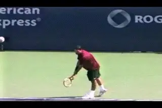
Federer's serve: less extreme and a better model.
So far on TPA we have taken a detailed look at the motions of two of the greatest servers in the modern: Pete Sampras (link) and Andy Roddick. (link)
Now in the next two articles we'll analyze the motion of another top player, a player with one of the most underrated serves in the game: Roger Federer. Federer is a great model for most players at most levels, much better in many respects than either Sampras or Roddick. In these articles we are going to use his motion to identify all the basic elements that go into building a high level technical service motion, a motion that will allow players to get the most out of their ability on a consistent basis.
In our analysis of Pete and Andy we identified certain basic positions in their motions that are shared by all good servers. But other components, the ones that make their motions particularly distinctive, are more problematic for many if not most players to model.
For Sampras these include his starting stance, his body rotation, and the extreme left ball position on his toss--all omponents that contribute to his heavy, high velocity ball, something we have quantified in terms of the spin rates. (link) For Roddick the elements are more idiosyncratic: his supersonic abbreviated windup, his extreme suppination, and his use of both feet in the narrow stance. These are elements that are very difficult to model even by players at the highest levels.
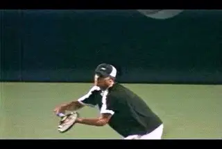
What makes Andy distinct makes him more difficult to model.
Don't get me wrong, I feel it's important to analyze the motions of the great players--obviously, since I have spent so much time doing it. Understanding what is really happening is the only way to develop clear and accurate information. Coaches need to be knowledgeable about what is actually happening in the strokes to decide what their particular players are capable or incapable of attempting and to help them try.
Some players will always be able to incorporate or partially incorporate advanced elements. But my observation is that, for the majority, including many players at very high levels, blindly trying to copy what makes players like Roddick and Sampras special can cause more harm than benefit. Just look around at any sectional junior tournament and see how many kids think they are using Roddick's abbreviated motion. If you put the video camera on them, you see reality is different. Their motions are usually technically inferior to the players with more conventional windups and stances.
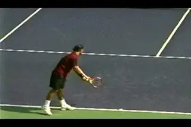
Smooth, effortless, classical.
Why Roger?
[Roger Federer's motion is so smooth and effortless that it doesn't attract the same attention as Pete or Andy.] What makes Federer less distinctive is probably what also makes him a better model. It's a simpler, more classical motion with fewer extreme elements.
Roger's serve may not have the mph or be as dynamic looking as Andy Roddick's. It may not have as much topspin or be as unplayable as Pete's. But it would be hard to claim it isn't effective, and seemlessly integrated into his all court game. If you were to pick one service motion from the top players to use as a template for building or improving your serve, my opinion is that it should be Roger.
So we'll take a look at his motion, element by element. In this first article we'll start with the grip, and the starting stance. We'll also address the windup or backswing, the racket drop, and the path of the arm and racket to the ball. In the next article, we'll continue the analysis with Roger's toss, leg action, body rotation, and his followthrough and then talk about how to put all the elements together for yourself.
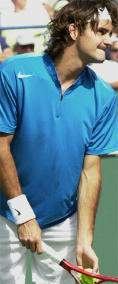
Federer's serving grip: a mild eastern backhand.
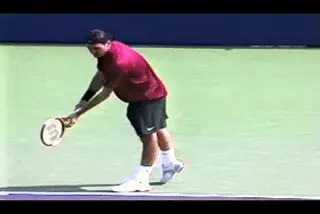
The key to understanding the stance is when both feet are on the court.
Grip
Like all pro players, Federer uses some version of a backhand grip. You could call it a continental, or a mild eastern backhand. If we look at the position of his hand on the racket bevels, most of the palm of his hand is on the top bevel, or bevel 1. His index knuckle appears to be in the center of bevel 2. This grip works well for high level players, pro players, college players, ranked juniors, even some advanced club players. But you can develop the same basic swing elements with a slightly less extreme grip as well. You could call that less extreme grip a mild continental. The heel pad slides somewhat more to the right and is positioned somewhat less on bevel one and somewhat more on bevel two. The index knuckle slides somewhat to the right as well, to the edge between bevel 1 and bevel 2. This is an easier grip for lower level junior players and many adults. It worked pretty well at the pro level for John McEnroe as well.
Starting Stance
Federer starts with his weight forward on his front foot, standing up on his back toes. Then he rocks back and stands up as he starts his windup. That initial leaning position is not the key to understanding his stance. That a personal ritual, similar to the way Sampras started slightly hunched over, with his front toes up in the air. The real key is to see what happens as he starts his windup and stands up so that both feet are flat on the court.
What we see at that point is that his front foot is at a slight angle to the baseline, a little less than parallel. This angle is a slightly more open in the deuce court compared to the ad. The rear foot is offset to the left of the front foot, with the toe of the back foot roughly in line with the heel of the front foot. The rear foot appears to be just about exactly parallel to the baseline in both courts. But in the ad court it's also set a few inches further back to Roger's left.
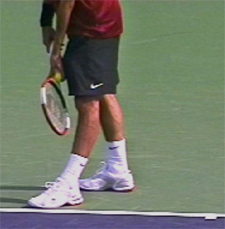
In the deuce court the front foot is more open. In the ad court, the feet are spread slightly further apart
At the start of the motion, Roger's racket and racket arm point basically straight ahead at the net. His tossing arm also points straight ahead with the ball resting roughly on the throat of the racket. Note also the angle of his shoulders. In the ad court they are a little bit shy of perpendicular to the net. In the deuce court they are open an increment further. This difference in the shoulder angle is analogous to the small differences in the angle of his front foot. Don't worry too much about the position down to the inch.
Also, don't be fooled by the personal physical rituals players use at the start of the serve: Roger's rocking motion, etc. The players are all a little different. What matters is what happens when they start the motion. Every player eventually develops his own rituals. Rather than model Roger's rituals, it's better to model the elements in his stance first. To do this, position your feet, torso and racket at Federer's angles as described above, and just stand straight up and down with your weight more or less equally distributed between your feet. Your arm and racket should point more or less straight ahead. You can also start with less left to right offset between the front and rear foot. I like to position players with both feet parallel to the baseline with the heels lined up and the shoulders fully square to the net and let them evolve their stance from there. As you get comfortable with these elements, you'll develop a unique physical ritual of your own.
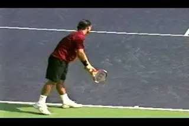
Roger's windup: the longest and most circular next to Phillippousis.
Windup
I love Roger Federer's wind up because, other than Mark Philippoussis, it's the longest and most circular of any of the top players. True, the abbreviated backswing is the overwhelmingly trendy motion. Andy Roddick set off that craze which has mesmerized and infatuated players, coaches and commentators. We saw in our Roddick articles that, at least for Andy, there probably is some technical advantage to it. As Rick Macci was the first to point out, it allows him--or forces him--to move in and out of the racket drop faster than any other player. (link.) And that's a beautiful and fearsome thing. The question is whether it is remotely realistic for the average player. And I have an answer. No. So far Andy is the only player I've ever filmed that has made it work.
The point of the windup is to position the racket at the full drop position so it can then travel upward to the ball on the right path and with the most speed. If the windup doesn't accomplish that, you're probably better off starting the motion with the racket already dropped behind you. Unfortunately this is exactly the case for many players who try to copy Roddick. They fail to make the basic drop position.
Roger's drop--not as deep as Andy or Pete.
It's absurd. A player decides that by modeling Andy's backswing he can get more racket head speed and it ends up creating the exact opposite effect. Trying to add an esoteric advanced element players sometimes destroy the more basic element they think they are trying to enhance.
Abbreviated windups are fine so long as you can rotate your arm backwards in the shoulder joint to get to the racket drop like Andy. The problem is that very, very few players actually can. In Your Strokes this month, we take a look at Paul Goldstein's serve and see how a top hundred player improved his racket drop significantly by moving away from the abbreviated windup. (link.)
Watch Roger's arm and racket in the wind up. [Rather than starting immediately upward like Andy, his arm and racket drop downward at the start of the motion, pointing directly down at the court.] This is similar to Sampras who also drops his arm and racket downward so they point at the court. At this point in the motion, however, Sampras begins to abbreviate the backswsing, bending his elbow and starting to raise the racket from the shoulder.
In contrast Roger keeps his arm straight and continues to move his hand backward and upward tracing a circular path. His arm stays straight longer and the tip of the racket doesn't point nearly as far to his right. When be begin to bend his elbow the motion still moves on a curve upward. As noted the only current player with a more circular path is Philippoussis, similar to the great John McEnroe in a previous generation.
Racket Drop
Someone with a greater knowledge of joint structure will eventually explain this fully, but for whatever exact physiological reasons[, [the more circular paths are much more likely to result in a good racket drop for the vast majority of players]] It has to do with range of motion in the shoulder joint. As we have seen, players like Sampras and Roddick complete the backswing mainly by rotating the upper arm backwards in the shoulder joint, what is called external rotation. This is what creates that incredible racket drop position that is so characteristic of their motions.
The interesting thing about Roger is that his drop isn't as deep as either Andy or Pete. You might argue that this is actually a function of the longer backswing and that he should shorten his motion. But I think it's the opposite. What I see is that Roger's shoulder doesn't seem to be quite as superhumanly flexible. That's why I think the longer more circular wind up probably maximizes his racket drop.
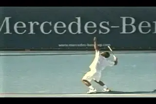
Another comparison of the racket drop.
You can see the difference by looking at the angle of the forearm to the court at the deepest point in the drop. [Roger's forearm is basically parallel to the court. Sampras and Roddick go further.] By rotating the upper arm back a little further in the shoulder joint, they drop the hand a little further down. You can see the line of the forearm for these two actually drops down a little below parallel to the court. This is reflected in the actual location of the racket head which is lower and closer to the court. If Roger's arm could rotate a little further back, you probably see his positions match Pete and Andy more closely.
[Now don't get me wrong, Roger has a great racket drop. The rest of us should be lucky enough to make the same position. But it's not quite as deep as Andy or Pete. Because his shoulder probably isn't quite as flexible, the more circular windup probably helps him maximize this position in his motion. And if it's true for Roger, how much more true is it for the average player?]
The truth is very few players can achieve the maximum racket drop with an elbow position that is horizontal or lower. Even many pro players. You can see this exact problem in this month's Your Strokes analysis of Paul Goldstein. [The problem with the abbreviated motions is that they put a premium of this component of the backswing to achieve the racket drop. Yes it would be great if most players could rotate the arm further backwards at the full drop. That could only mean more racket acceleration in the motion upward to the ball. And it's something you can probably improve by various techniques designed to increase your shoulder flexibility--strength training, stretching, deep tissue massage, etc.]
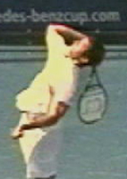
The line of the forearm indicates the amount of external rotation.
But the point is to develop the best possible racket position given whatever natural ability you have. The alignment of the racket on the right side of the body with the tip pointing basically down at the pro drop position is critical. It's better to do this with a higher elbow position than not to do it at all. Otherwise you end up with the racket at a diagonal across your back when it starts to the ball. My experience shows me that the path more directly upward is absolutely critical to maximize your power and spin potential. Again, it would be great to have a deeper racket drop with the shoulder rotating even further backwards. But this racket alignment with the racket tip pointing basically down seems to maximize the effect of whatever natural rotation you really have.
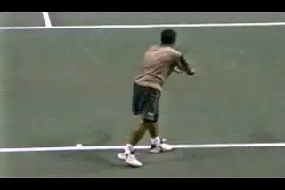
Philipoussis: a great racket drop despite, or because of, the backswing.
But what if by a statistical miracle, I am blessed by god with that same flexible shoulder as the greatest servers? Won't I be giving away racket drop with the more circular motion? I don't think so. You can look at Philippoussis, whose motion is more circular than Federer's and see that it doesn't really seem to have a negative impact. If we look at the video, we can see that Mark's racket drop is about the same as that of Sampras or Roddick. Even with the circular backswing he achieves the same forearm position, dipping a little below parallel to the court.
So you have very little to lose and much to gain by modeling Roger's windup--or even that of Philippoussis. If video of your motion shows that you can achieve a racket drop equal to the top pros, sure, you can experiment with abbreviating the motion more. My guess is that will be 5% or even less of all players. Meanwhile, if you are in the other 95%, you will have maximized the value of the number one power source on the serve.
Arm Motion to Contact
In our analysis of Pete's serve, we identified two primary elements in the motion of the hand and racket to the ball. These are the extension of the elbow and the rotation of the hand and arm. One of the things I'm happiest about on TPA is how we are constantly increasing our knowledge of all aspects of the game, including the serve.
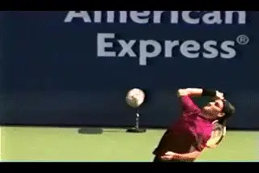
The extension of the elbow and rotation of the hand and arm--but what about the wrist?
If you read Brian Gordon's groundbreaking article last month on tennis and quantitative measurement, you no doubt were fascinated by the breakdown of the contribution of the segments to racket head speed. (link.) A big part of that contribution comes from the wrist. (About 25%.) And in fact we can definitely see the motion of the wrist in the high speed video. It moves from a laid back position at the drop to a neutral position at the contact. I have described this motion as giving the ball a "high 5" with the continental grip.
Brian discusses the meaning and ramifications of this in considerable detail. He concludes that that wrist motion may be at least partially driven by other components in the motion. He agrees with me--tentatively at least--that the concept of "snapping" the wrist forward is probably counterproductive in coaching.
Now in case any of you think I published that article just because Brian's science seemed to support my qualitative analysis, I have a surprise. Some of Brian's subsequent work, or so he tells me, actually indicates something different. If I understand him correctly he has found that there is definitely some active use or contraction of the muscles in the forward wrist motion. So the wrist movement is not all passive, and may even qualify as some form of "snap."
And I say great! More data is better and may lead to better understanding. I get bored just rehashing the same arguments anyway. The chance to revise your thinking is actually more stimulating. This isn't a religious orthodoxy we're running here at TPA, although some coaches treat their beliefs that way and if challenged will battle to the death against the infidel.
Brian may be completely right about his revised view of the wrist, and knowing Brian he probably is. We'll let him speak for himself when he is ready on that one. But what I will stand behind is the concept of position analysis in looking at this complex motion (and all the other complex motions in tennis for that matter.) The high speed video shows the critical role of the forearm extension and the hand and arm rotation in taking the racket to the ball. According to Brian's analysis right before contact the elbow extension contributes about 35% of the racket head speed, and the combined rotation of the hand and arm adds another 22%. As these two key motions are happening the wrist is also moving from the laid back to the square position, accounting for it 's own 24%.
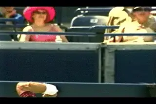
Is it a matter of what muscles--or what positions?
The problem isn't with the wrist movement per se. The problem is with the teaching concept of the forward wrist "snap." In my opinion, this gives players the wrong image of the actual path of the hand and racket.
If we look at the motion we can see that after contact the hand and arm continue to rotate in a counterclock wise fashion. [This part of the motion has come to be described as "pronation" although it's really just part of a continuum of the rotations that begin when the racket starts upward to the ball. After the contact, the arm and racket continue to rotate or pronate. As they do, they stay in a virtually straight line.] This means the racket face is in line with the arm and you can draw a straight line outward from the shoulder to the tip of the racket. There isn't a forward break of the wrist at the contact or in the following part of the motion. This wrist break occurs, to the extent it happens (and it doesn't always happen) well out into the followthrough when the hand is already coming down.
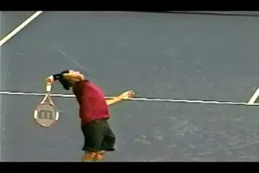
Watch the hand arm and racket rotate and stay in line.
This observation of the actual position of the hand in the high speed footage was the basis for challenging the common serving tip: "snap the wrist" for power and spin. In my experience, players who were actually able to follow this advice, and snap the wrist dramatically forward after contact tended to significantly alter the shape of the motion. If you watch Roger, as his arm and racket continue to rotate they also move forward but also from his left to his right. They reach an angle of about 45 degrees to the baseline before coming down and back across the body to his left. Players who "snap" or try to snap lack this sweeping left to right motion. Instead the motion breaks off sharply in front of them, usually with a restricted followthrough. The whole thing usually looks tight and forced.
There are really two separate issues here to consider. The first issue is what the biomechanical components of the motion really are, their quantitative positions in space and time, and their contributions to racket head speed. This is the important, ground-breaking work that Brian and a handful of other researchers like Bruce Elliot are doing. The second issue is how to make this happen. This has been the focus of my work in high speed filming. My assumption is that if you can help a player match the physical positions in a great technical motion, then you are probably helping that player maximize the efficiency and the effectiveness of his own stroke.
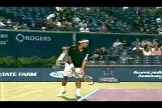
More data can only help us understand the key positions.
The quantitative approach developed by Brian can only help us all in our efforts to define model technical positions more clearly. But what happens and how it happens can be separate issues. This is where the art of coaching comes in. The movement of the wrist contributes to racket head speed no doubt. The question is how to help a player create a motion that naturally includes this, as well as the other equally important, or even more important, parts of the motion. Different players will definitely respond better to different input and to different coaches in their efforts to achieve this. I don't think we have to worry that the debates about how best to do this will be definitively settled in the immediate future.
So that's it for Part 1. Stay tuned for next month. We take a look at the other aspects of Roger's motion that are equally good models for other players: the tossing motion, his use of the legs, his body rotation, and the followthrough and finish of the swing.

John Yandell is widely acknowledged as one of the leading videographers and students of the modern game of professional tennis. His high speed filming for Advanced Tennis and TPA have provided new visual resources that have changed the way the game is studied and understood by both players and coaches. He has done personal video analysis for hundreds of high level competitive players, including Justine Henin-Hardenne, Taylor Dent and John McEnroe, among others.
In addition to his role as Editor of TPA he is the author of the critically acclaimed book Visual Tennis. The John Yandell Tennis School is located in San Francisco, California.